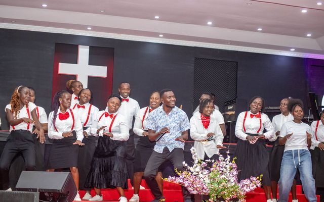
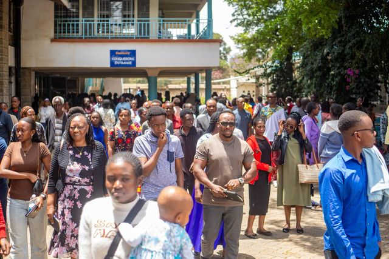

M4
Circular image reveal
The photo opens from a point to a full circle while the image settles from 1.12 to 1. Selected

The 12 requested experiments, plus the Tabor scroll-ink technique. Scroll slowly. With “reduce motion” switched on in your device settings, everything appears instantly and nothing moves.
Words rise one by one with a 70 ms stagger. Used for page H1s. Selected
Letters rise with a 2° tilt. Reserved for short display words (2–3 per site). Use sparingly
Each line slides up from behind its own mask. For the vision statement and quotes. Selected
The photo opens from a point to a full circle while the image settles from 1.12 to 1. Selected
An ellipse grows from off-centre, like light spreading. Used for the youth and fellowship pages. Use sparingly

Three entrances side by side: a scale-in (1.08→1), blur-to-sharp, and a bottom-up wipe. Selected



The back photo moves at 0.06× and the front at -0.08×, so the layers separate gently. Desktop only; off on mobile and with reduced motion. Selected

The arch photo stays pinned while three statements scroll past, and the photo crossfades on each step. On mobile this becomes a simple stacked list. Selected


Reconcile people to God through worship, prayer and the preaching of the Word.
Equip believers for ministry to God and to people.
Carry a transformative agenda into families, Nakuru and the nations.
The frame starts inset with rounded corners and grows to full-bleed as you scroll; the heading fades in over it. Desktop only. Selected

A slow horizontal band of words and the verified vision. Pauses on hover; with reduced motion it becomes static, wrapped text. Selected
The page background eases from paper to night when this band reaches mid-screen, then back afterwards. Used once, before the conference feature. Selected
Life Celebration Centre exists to reconcile people to God, equip them for ministry to God and the people, with a transformative agenda.
Grid items rise in sequence (90 ms apart) as the group enters the viewport. Selected




Muted words darken as you read, one by one. This is the circles+co Tabor technique, adapted for the mission statement. Readable without JavaScript. Selected
Life Celebration Centre exists to reconcile people to God, equip them for ministry to God and the people, with a transformative agenda.